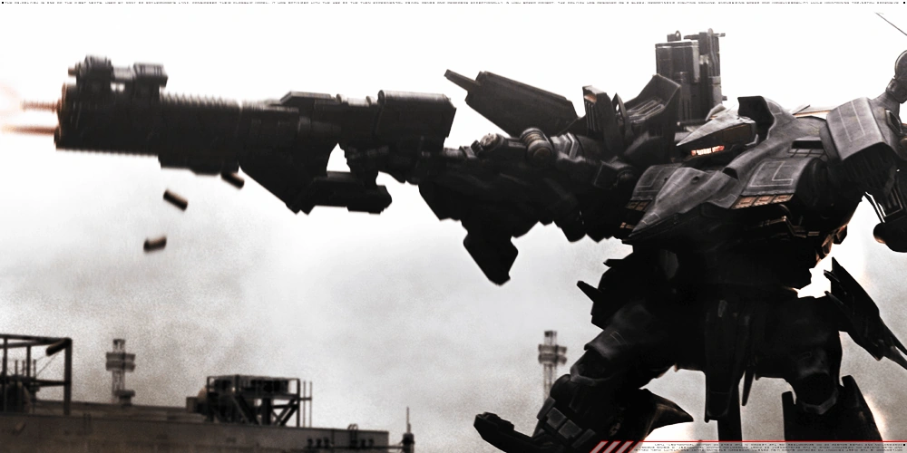

The automaton is an idea that has existed for centuries. In legends, there are many accounts of clockwork animals which were crafted to act just like their living kin. The Renaissance was swept with a craze for the mechanical, with pulley-built knights and complex puppets abound. In the 1920s, the term “robot” was first coined to, describing an autonomous mechanical man.
But another, more specific trend would follow the robot, one which started loose and undefined but would crystallize into a singular concept over the years — the mecha. Born in Japan as a term derived from “mechanism”, the mecha is a broad but simple concept: a vehicle piloted in the same way one would any other, but with the arms or legs of an animal or human.
Initially most popular in the “super robot” genre as essentially oversized superheroes, the mecha would quickly diversify across a wide range of tones and genre — from grounded military drama to fantastical space opera. Soon, banking off big ideas and action figures, mecha became a worldwide cultural phenomenon.

From the Japan-localized Transformers toys that swept off shelves, to gritty, serious walking rigs in films like Aliens and The Matrix, mecha media became shorthand for sci-fi as a whole. In a way, they are a fusion of the vehicle and man of the future, a knight in shining armor just as much as a workhorse tool in the garage. They possess an anthropomorphized relatability that a vehicle does not, but the versatility of a powerful, larger than life machine.
At the same time as it proliferated on the pages of comics and the animated screen, another mecha movement was occurring in real life. The idea of a walking, arm-moving robot did not just make for good toys, but held significance in military and commercial fields.
Today, any humanoid machine will get labeled a Transformer or a Gundam by the press as a clear allusion to the genre, but earlier mecha were developed even before they were popular in fiction. Some of these can be chalked up to specific goals and research projects, but as time went on the mecha evolved from a functional creation to a product of curiosity, made simply to see if it can be accomplished.
Unlike many futurist proposals from bygone eras, the mecha has a lasting influence which endures to the modern day. After all, its appeal is easy to understand: it is a vehicle that is built to be, very simply, a man that is larger than life. One that anyone can get in and control as if it were a larger version of themself. One that gives them the ability to stand and walk like a giant, towering over the rest of us. There will be a machine, and we will make it look like us.